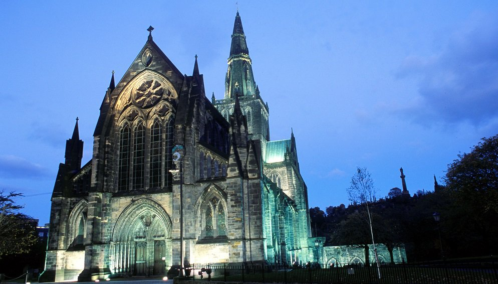
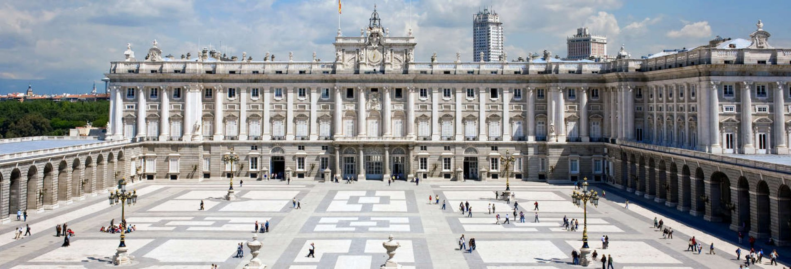
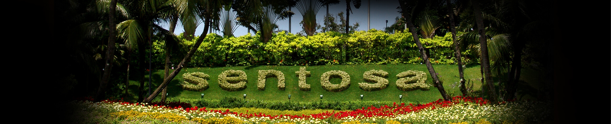
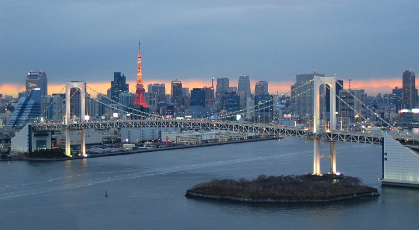

Reykjavík is on the southwestern tip of Iceland, and is the capital and largest city. It has a subpolar oceanic climate, but despite the northern latitude, the temperature very rarely drops below -15 degrees Celsius in the winter. Locals tend to go out late, so bars that look quiet can fill up suddenly, usually after midnight on a weekend. It is also very common for an establishment that is a café to become a bar during the evening.
Glasgow is the largest city in Scotland. Winters are cool and overcast, usually with a mean of 5 degrees Celsius but sometimes falls below freezing. The most extreme temperature instances have seen temperatures around -12 degrees Celsius, despite its northerly latitude, similar to Moscow's latitude. In the summer, the warmest month is usually July, with an average high above 20 degrees Celsius. Glasgow is a popular tourist attraction and also has sweet water. Glasgow is separated in different districts, such as the retail and theater district, merchant city, financial district, west end, and east end. There is a wide range of cultural activities, and also a large selection of museums to visit.

Madrid is the capital of Spain, and is also where the Madrid protocol was signed. It is the third largest city in the EU, and its metropolitan area is the third largest. It also houses the headquarters of the World Tourism Organization. The Madrid region is a mix of a cold semi-arid climate that borders on a hot summer Mediterranean climate. The warmest month of the summer is July, with average temperatures ranging from 32-33 Celsius depending on the location. During city heatwaves, the temperature can occasionally get over 35 degrees Celsius.

Athens is the largest city and is the capital of Greece. It is one of the biggest economic centers in southeast Europe, and is recognized as a global city. This city is a world center for architectural research, with many architectural museums and national institutions. People move about Athens using either bus lines, Metros, railways and motorways. The city is divided into smaller districts, each with their own types of neighborhoods. Athens incorporates architectural styles ranging from Greco-Roman and Neoclassical to modern.
Sentosa is a popular island resort off the coast of Singapore, an island by the tip of Malaysia. However, Sentosa was previously known under darker names: examples are Dead Island and Island of the Dead. Despite the tropical scenery, Sentosa has known widespread murder, piracy, and death in its past. The island can be reached by a bridge connected to the mainland of Singapore, alternatively a cable car can be ridden to reach the resort. One of the main attractions is the Merlion statue, which spouts out water from the mouth. Prior to 2007, Sentosa used to host the "Magical Sentosa" show, a multimedia nighttime show hosted at the Sentosa Musical Fountain, with a clever use of lights, fire and projections on water. The show starred Mr Whamsey, a conductor of this magical fountain, and Kiki, the mischievous monkey of Sentosa.


en.wikipedia.org
https://peoplemakeglasgow.com/things-to-do/top-attractions/glasgow-cathedral
http://www.esmadrid.com/en
http://www.visitgreece.gr/en/main_cities/athens
http://sentosa.com/
http://www.japan-guide.com/e/e2164.html